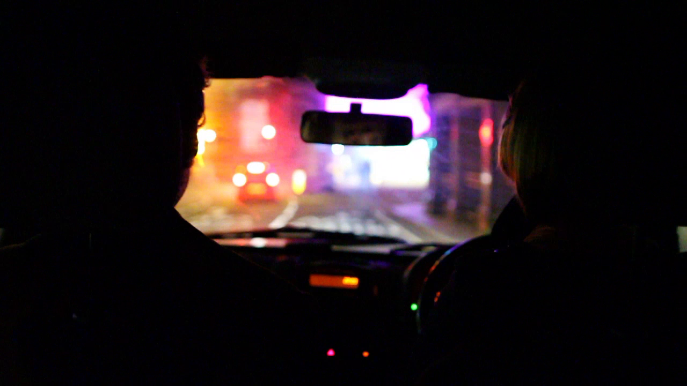
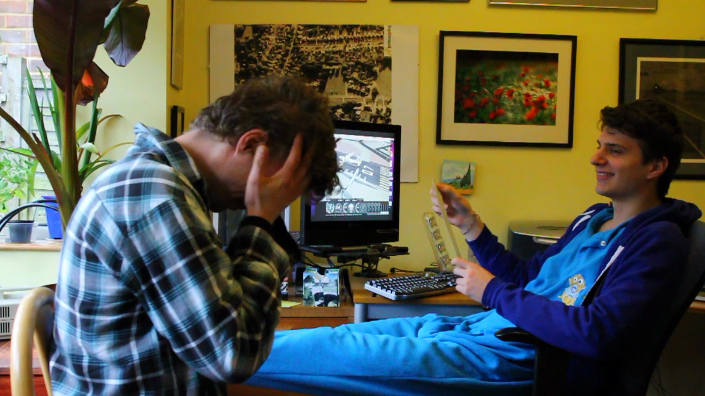
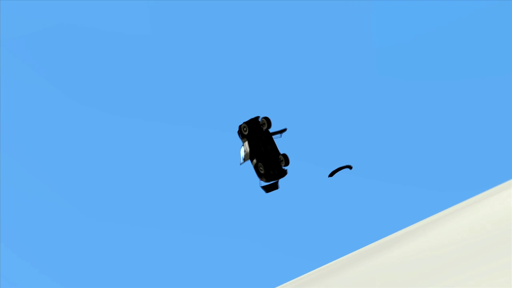

16mins, 2024
A man looks back on a time in his life with new eyes and ears.
A lo-fi slow-cinema slow burn, a meditation on time, the body, and obstacles too big to see. An atmospheric piece that leaves the audience devastated, without quite being able to put into words why. In the vein of Boyhood, it took over a decade to finally come together.
Camera: Sasha Litvintseva
WR SAUNDERS 2024